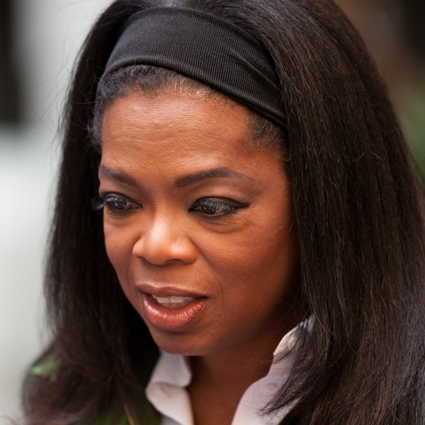

Analysis
In a time where technology and social media have taken over the world’s free time, Oprah Winfrey struck back when she revealed her Book Club. Oprah’s Book Club ran from 1996 to 2002 in an attempt to get her viewers reading again. She was successful in her pursuit. R. Mark Hall’s The “Oprahfication” of Literacy: Reading Oprah’s Book Club examines the Book Club as “[inviting] us to develop this conceptualization of literacy as an ideological practice by investigating the manner or content of thinking about reading and writing associated with it” (Hall 647). In an attempt to shift the academic view of literacy as a pretentious subject, one that has a right and a wrong way of doing so, Hall praises Oprah for being a literary sponsor for her viewers. As seen with her strategies for the success of her television show, the same strategy applies to her book club: she relates the happiness that her book club brings her back to her sad childhood upbringing. In an interview with Life Magazine, she stated “no one ever told me I was loved. Ever, ever, ever. Reading and being able to be a smart girl was my only sense of value, and it was the only time I felt loved.” She credits her modern day success to loving reading when she was young and being abused. She makes it very clear that reading is what saved her from a bad future. By stating this, she is promising her readers the same sort of redemption in their own lives, since reading “freed [Oprah]” (Hall 649). Reading and engaging in the same book at the same time as one’s favorite celebrity breaks a fourth wall and causes the reader to have feelings of closeness to Winfrey herself.
The ability that Oprah Winfrey has to hold this much power and influence in a world dominated by white men makes her an excellent model of a Black feminist. According to B. Richie’s Arrested Justice: Black Women, Violence, and America's Prison Nation, there are five tenets of Black feminism. Tenet one is “interlocking oppression” which is defined as “Black women’s bodies are simultaneously marked by racial, gender, sexual, color, historical, class, and other stigmas; these stigmatized identities and the subsequent oppressions are not hierarchical or additive; they are intersectional.” Oprah Winfrey has talked about the stigmas that she faced growing up in poverty in inner-city Milwaukee with her grandmother followed by Nashville, Tennessee with her father. By speaking about the issues she faced growing up on her talk show, she is destigmatizing these identities of class, race, and gender. She has spoken on her show about how she was sexually abused and conceived a baby from the repeated incidents. By doing this and speaking her truth, she is attempting to no longer live behind the oppression of her past.
Tenet two is “standpoint epistemology” which Richie defines as “those who understand the phenomenon under exploration are in the best position to evaluate and make claims about the meaning of it.” Oprah could not be on a better or higher platform to speak her words of wisdom as a Black feminist. In 2007, she opened the Oprah Winfrey Leadership Academy For Girls in South Africa after a trip with Nelson Mandela earlier. By 2012, she had given $400,000,000 for educational causes and four-hundred scholarships to Morehouse College. In 1998, Winfrey started “Oprah’s Angel Network” in which the charity raised more than $80,000,000 while Winfrey personally covered all of the administrative costs (Oprah.com). While embodying such a powerful television personality, her humanitarian work speaks volumes on the contents of her moral compass.
Tenet three is “everyday knowledge” which Richie defines as “synthesized meaning making from an ever-shifting collective consciousness e.g., Interpretation of collective wisdom drawn from shared experiences.” Oprah makes great use of this tenet on her show. By interviewing her guests in a very comforting way and allowing them to open up, essentially acting as a therapist, she relates her own experiences to those she brings into her studio. By doing that, those watching in the audience and at home can also join in the event with each of their own shared experiences as well.
Tenet four is “dialectical images in the U.S.” which Richie defines as “…fluid image, almost always in conflict with dominant notions of hegemonic femininity that imagines women to be passive, nurturing, and relationship-oriented, and thus, ‘innocent victims’ when they experience male violence.” Oprah has talked about her experiences with male violence in her life many times throughout her career. She is not hyper-feminine yet not masculine. Whether or not her image is her own doing or recommendation by her extensive team is unknown, regardless she does an excellent job at representing women.
The final tenet, tenet five, is “social justice praxis” which Richie defines as “accomplished through challenging hierarchies of power, transforming academic institutions, advancing a new kind of organizational leadership, and reinvigorating grassroots mobilization efforts for social change.” As seen in tenet one, her humanitarianism regarding academics worldwide are extensive. Her fundraising efforts and personal donations have helped countless people who were in need. Her leadership has helped people with their personal lives, literacy rates, and general happiness. Oprah Winfrey offers people a purpose. Regardless of if critics slam her for doing such things for money, we live in a capitalist country, and Oprah has gone out of her way for her entire career to touch the lives of people because she did not have someone like that when she was growing up.